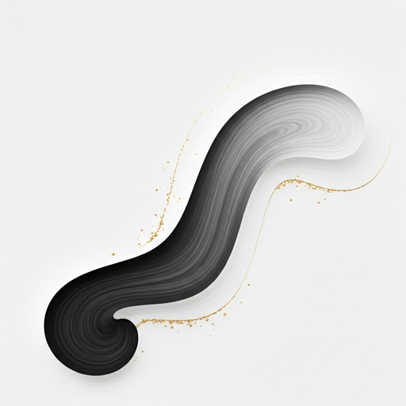

The Geometry of Silence
MINIMALISM
REIMAGINED
Exploring the boundary where space meets line. A continuous journey through delicate strokes and monochromatic depths.

Vortex 01
INK ON COTTON PAPER
Curated
Form
Each stroke is deliberate. Each void is intentional. Our gallery focuses on the power of the singular mark.
View All Exhibits arrow_right_altTechnique
Single-path vector mathematics blended with traditional Japanese ink mastery.

Where lines find
their rhythm.
Our creative process begins with a single point of focus. We strip away the unnecessary until only the essential remains—the soul of the subject captured in a thin, elegant stroke.
12k+
Unique Paths
0.2mm
Precision
"Art-Morph is not about what we see, but how we choose to define the edges of reality using the most fundamental element of design: the line."
Elias Thorne — Lead Architect
Join the Collective
Receive a monthly curation of our finest minimal studies and exclusive early access to digital drops.